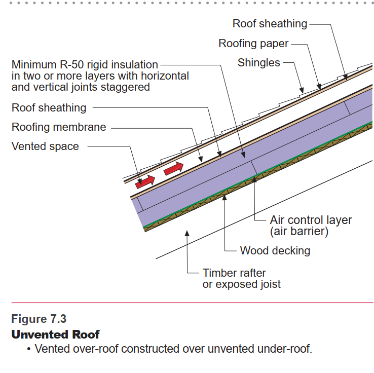

Roof Assembly In Progress
Cathedral roof, no cavity insulation — full exterior polyiso, vented cold roof over a structural top deck

Where We Are
Rafters and ZIP sheathing are installed and taped. Everything above that — polyiso, strapping, top deck, ice and water, metal — is designed but three items are still pending confirmation before ordering: polyiso thickness, top deck thickness, and the long-screw fastening schedule.
Layer Stack (bottom to top)
| Layer | Spec |
|---|---|
| Rafters | 2x10 @ 24" OC, open bays, no cavity insulation |
| ZIP sheathing | Taped seams, serves as the air control layer |
| Polyiso | Continuous exterior insulation, 2–3 staggered layers, taped seams, thickness pending |
| Strapping | Vertical, aligned to rafters at 24" OC, creates vented air gap |
| Top deck | OSB or plywood, fastened to strapping, carries the metal roof, thickness pending |
| Ice & water shield | Full coverage, over top deck only, under metal |
| Standing seam metal | 24 ga, 21" panels |
| Ridge | Ridge vent product, matched to standing seam over a full deck |
| Eave | Cor-A-Vent bug blocking, vent intake |
Decisions
No cavity insulation — all insulation above the deck
All insulation is moved above the ZIP sheathing as continuous exterior polyiso. Rafter bays are left open.
Why: With cavity batts, Zone 6 code and moisture-safety practice requires the exterior rigid layer to carry roughly half the total R-value on its own (about R-25 minimum) to keep the deck above dew point. Going all-exterior removes that ratio requirement entirely, since there is no air-permeable insulation on the cold side of the deck to create a condensation risk.
Ice and water shield on the top deck only, not on the ZIP
Ice and water shield goes over the structural top deck. No ice and water on the ZIP layer.
Why: The ZIP layer is the air control layer and needs to stay vapor-open so the assembly can dry if needed. Ice and water is a vapor-closed membrane; putting it on the ZIP would trap that inner layer between two closed layers with no way to dry.
- Full OSB/ply top deck added over the strapping — roofer's panel is 21", cannot land directly on 24" framing.
- Strapping fastened to rafters with structural screws through the full polyiso stack; top deck fastened to strapping only, with ordinary screws/nails (does not need to reach the rafter).
- Cor-A-Vent bug blocking at eave, venting ridge cap at peak.
- 24 ga striated or matte finish standing seam — masks oil-canning risk at this fastener spacing.
Materials & Specs
| Item | Spec |
|---|---|
| 2x10 rafters | 24" OC, already installed |
| Ridge board | 2x12, already installed |
| ZIP sheathing | Already installed, seams taped |
| Polyiso | Continuous, 2–3 staggered layers, seams taped; thickness TBD (target ~R-30) |
| Strapping | Vertical, 24" OC aligned to rafters; structural screws into rafters, min 2" embedment |
| Top deck | OSB or plywood over strapping; thickness and span rating TBD |
| Ice and water shield | Full coverage over top deck only, under metal |
| Standing seam panels | 24 gauge, 21" panels, striated or matte finish |
| Eave blocking | Cor-A-Vent bug screen |
| Ridge | Ridge vent product, rated for standing seam over full deck; product TBD |
Installation Notes
- ZIP sheathing is installed. Confirm all seams taped before proceeding.
- Install polyiso in staggered layers over ZIP. Tape all seams.
- Install vertical strapping at 24" OC, aligned to rafters. Long structural screws (schedule TBD, see Open Items) through full polyiso stack and ZIP, minimum 2" embedment into rafter.
- Install Cor-A-Vent at eave before strapping is complete.
- Install top deck over strapping. Fasten to strapping only, ordinary screws/nails per deck manufacturer’s schedule (TBD, see Open Items).
- Install ice and water shield over full top deck.
- Install standing seam metal panels.
- Install ridge vent product at peak (product TBD, see Open Items).
- Chimney penetration detailed separately once location is confirmed — do not finalize strapping/deck/panel layout at ridge until set.
If a strapping screw misses the rafter, it is visible from inside since bays are open (no cavity insulation to hide it). Pull the missed screw. Patch the interior face of the ZIP at the puncture. Confirm with Huber whether tape or liquid flash is rated for their raw OSB backside — not just the taped WRB face — before relying on this as the seal. Flag as unconfirmed until checked.
Open Items
Pending before ordering
Polyiso thickness: target ~R-30. Confirm with Dummerston whether the cathedral-ceiling code exception applies — cap is typically 500 sf and this footprint is 480 sf, close enough to the line to verify before assuming it applies. Confirm actual effective R-per-inch with Ryan for the specific product being quoted.
Top deck thickness and span rating: needed from Ryan or an engineer. This also sets the strapping OC and the deck’s own fastening schedule.
Strapping-to-rafter fastener schedule: minimum 2" embedment confirmed, but full spacing needs a manufacturer engineering report or engineer sign-off given Dummerston’s 50 psf ground snow load. Working starting point from comparable builds: 8–10" HeadLok, 16" OC up the slope — confirm before ordering.
Ridge vent product: needs to be rated for standing seam over a full deck with continuous eave-to-ridge airflow.
Panel gauge and finish: confirm 24 ga, striated or matte, with roofer.
Chimney location: not yet determined, affects strapping layout, deck cuts, and panel layout. See Wood Stove.
Dependencies
Related Systems
Wood Stove — chimney location affects strapping layout and panel cuts. Finalize chimney routing before completing roof panel layout.
Rafter Ties — rafter ties attach to rafters. Install rafter ties before closing up interior ceiling if any ties are to be concealed.
Loft — loft joists may serve as rafter ties. Confirm structural role before roof is finalized.
Ventilation — Cor-A-Vent at eave is part of the building envelope air strategy. Coordinate with ventilation page.
Interior Finishes — ceiling substrate is the underside of taped ZIP in open rafter bays. Furring and wire-chase detail to be documented on a separate Interior Finishes page (not yet created).